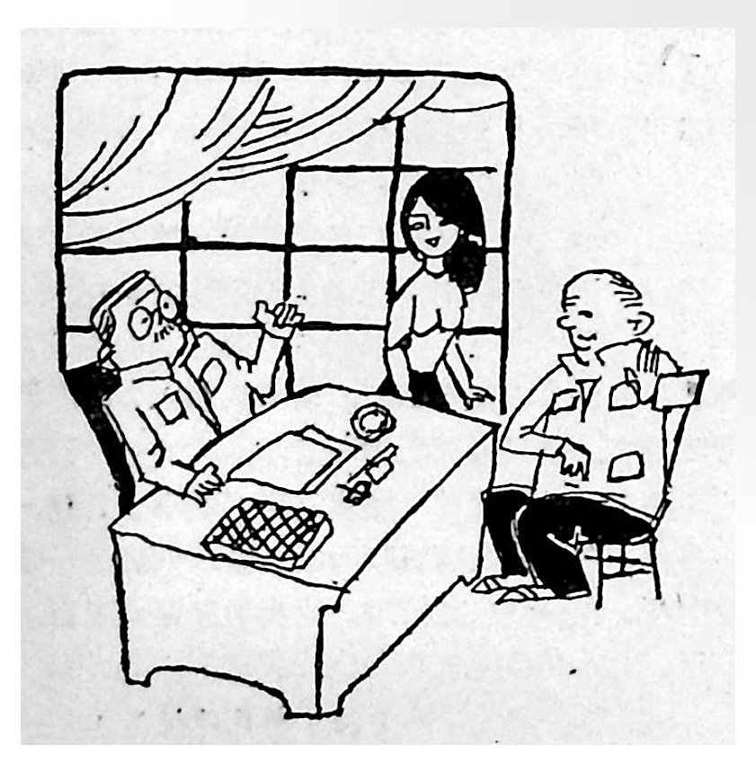

佚名 《人事》1987年第6期（总第21期），第48页（原载《中国青年报》）
通知开会（插图）
Notice of a Meeting (inset drawing)
- Passage illustrated
客人问道：“今年多大啦？二十整？真是年轻有为呀！我说董局长，干脆把咱玲玲调到县委工作吧。”董局长笑而不语。
The visitor asked: “How old are you this year? Twenty exactly? So young and so capable! I say, Bureau Chief Dong, why not just transfer our Lingling to work at the county Party committee?” Bureau Chief Dong smiled and said nothing.From the story 通知开会 (“Notice of a Meeting”) by Liang Shenyi, reprinted from Zhongguo qingnian bao (China Youth Daily), on the same page. 梁深义《通知开会》（原载《中国青年报》），同页
- Description
- Illustration for the story: in a bureau chief's office, a visitor sits in the host's chair behind the desk, gesturing expansively, while the young clerk stands shyly behind her father.
- Note
- The visitor is County Secretary Li, whose one-eyed son her mother wants her to marry; his offer to transfer her to the county Party committee is a hint at the match.
- Artist
- Unattributed 佚名
- Reprinted from
- 《中国青年报》 — Zhongguo qingnian bao (China Youth Daily)
- Published in
- 《人事》1987年第6期（总第21期）, p. 48
- Themes
- Nepotism · Story illustrations

Cite
Unattributed, “通知开会（插图）” [Notice of a Meeting (inset drawing)], Renshi (Personnel) 《人事》, 1987, no. 6, p. 48.